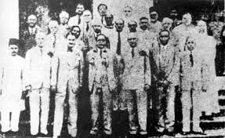
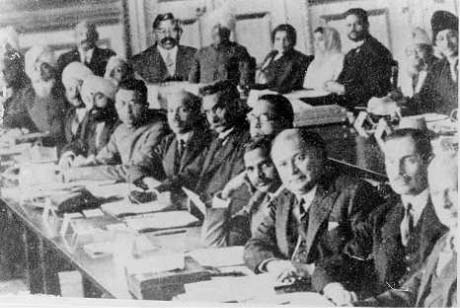

Core Content & PYQ Alignment
70th BPSC PYQ
Struggle-Truce-Struggle (S-T-S) strategy: The 70th BPSC asked about the S-T-S strategy — it came into prominence with the Swadeshi Movement. However, the Civil Disobedience Movement is the classic example of S-T-S: struggle (1930-31), truce (Gandhi-Irwin Pact, 1931), struggle (1932-34). This pattern was first seen in the Swadeshi era and refined by Gandhi in the Civil Disobedience era.
71st BPSC PYQ
Gandhi's "Do or Die" slogan (Q84): The 71st asked who said "We shall either free India or die in the attempt" — Gandhi. This was the Quit India slogan (1942), which followed the Civil Disobedience era. Know the full arc: Civil Disobedience (1930-34) → GoI Act 1935 → Quit India (1942).
💡 Deep-dive ready: Complete analysis of the Dandi March, the three Round Table Conferences, the Gandhi-Irwin Pact, the Poona Pact, the Simon Commission, the Nehru Report, the Government of India Act 1935, Bihar connections, and 7 exam predictions:
Civil Disobedience Master Detail →
A. The Build-Up: Simon Commission & Nehru Report (1927-1929) EXAM CORE
| Event | Year | Detail |
|---|---|---|
| Simon Commission | 1927 (arrived 1928) | 7 British members, NO Indian; boycotted by all Indian parties; "Simon Go Back" |
| Lajpat Rai lathi-charge | October 1928 (died Nov 17, 1928) | During Simon protest in Lahore; "Every blow aimed at me is a nail in the coffin of British rule" |
| Nehru Report | 1928 | First Indian-drafted constitution; Motilal Nehru chaired; recommended dominion status, unified electorate |
| Jinnah's 14 Points | 1929 | Response to Nehru Report; demanded separate electorates, one-third Muslim representation, federal system |
| Lahore Session | December 1929 | Nehru presided; Purna Swaraj demanded; January 26, 1930 = Independence Day |

The Simon Commission (1928) — 7 British members, NO Indian member. Boycotted by all Indian parties with the slogan "Simon Go Back." Lala Lajpat Rai was lathi-charged during a protest and died of his injuries (November 1928).
B. The Dandi Salt March & Civil Disobedience (1930-1934) PYQ PATTERN
| Phase | Period | Key Events |
|---|---|---|
| 1. Launch (Struggle) | Mar – Dec 1930 | Dandi Salt March (Mar 12 – Apr 6, 1930); salt law violated; movement spread across India; Gandhi arrested (May 5, 1930) |
| 2. Truce | Jan – Sep 1931 | Gandhi-Irwin Pact (Mar 5, 1931); movement suspended; Karachi session (Mar 1931, fundamental rights resolution) |
| 3. Second RTC | Sep – Dec 1931 | Gandhi attended Second Round Table Conference (London); inconclusive; Gandhi returned disappointed |
| 4. Resumption (Struggle) | Jan 1932 – Apr 1934 | Movement resumed; Communal Award (Aug 1932); Poona Pact (Sep 1932); movement formally withdrawn (Apr 1934) |

Gandhi at Dandi, April 5, 1930 — picking up salt from the seashore to break the British salt law. The Dandi Salt March (240 miles, March 12 – April 6, 1930) launched the Civil Disobedience Movement.
C. The Three Round Table Conferences (1930-1932) CHRONOLOGY
| Conference | Date | INC Status | Key Outcome |
|---|---|---|---|
| First RTC | Nov 1930 – Jan 1931 | Boycotted (Civil Disobedience on) | Inaugurated by King George V; discussed federal structure; inconclusive without INC |
| Second RTC | Sep – Dec 1931 | Gandhi attended (sole INC rep) | Gandhi vs Muslim League, Ambedkar, princes; inconclusive; Gandhi returned disappointed |
| Third RTC | Nov – Dec 1932 | Boycotted (INC in jail) | Inconclusive; led directly to the Government of India Act 1935 |

Dr. B.R. Ambedkar among the delegates at the Round Table Conference in London (1930-31). Ambedkar represented the Depressed Classes. The INC boycotted the First RTC (Civil Disobedience was on). Gandhi attended the Second RTC (1931) as the sole INC representative.
🧠 Mnemonic — Civil Disobedience "S-T-R-S":
Struggle (Dandi 1930) → Truce (Gandhi-Irwin Pact 1931) → Round Table (Second RTC, Sep 1931) → Struggle resumed (Jan 1932).
"S-T-R-S: the four phases of the Civil Disobedience Movement."
Struggle (Dandi 1930) → Truce (Gandhi-Irwin Pact 1931) → Round Table (Second RTC, Sep 1931) → Struggle resumed (Jan 1932).
"S-T-R-S: the four phases of the Civil Disobedience Movement."